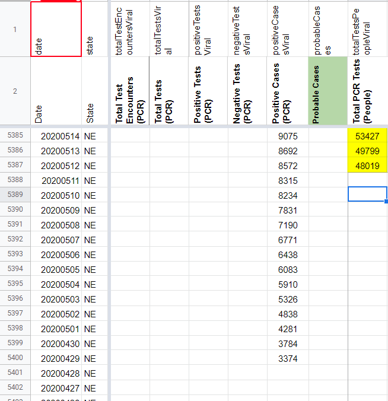

| Date | Number | Title |
|---|---|---|
| February 16, 2021, 9:07 PM PST | 1104 | [NE] Clear Confirmed Cases |
| February 16, 2021, 9:07 PM PST | 1104 | [NE] Clear Confirmed Cases |
| January 21, 2021, 2:14 PM PST | 1073 | [NE] Patch 01/20/21 Cases |
| January 21, 2021, 2:14 PM PST | 1073 | [NE] Patch 01/20/21 Cases |
| January 16, 2021, 2:05 PM PST | 1069 | [NE] Patch 01/15/21 timestamp error |
| January 16, 2021, 2:05 PM PST | 1069 | [NE] Patch 01/15/21 timestamp error |
| October 30, 2020, 11:36 AM PDT | 920 | [NE] Backfill positive tests pcr, negative tests pcr and total tests pcr from dashboard data |
| September 22, 2020, 12:20 PM PDT | 859 | [NE] Nebraska added a tests figure in addition to peoplewise figure for total tests |
| August 9, 2020, 4:47 PM PDT | 743 | [NE] Backfill Total PCR Tests (People) to 3/27 |
| June 26, 2020, 7:09 AM PDT | 547 | [NE] PCL Historical and WS2 |
#1104: [NE] Clear Confirmed Cases
Issue number 1104
jaclyde opened this issue on February 16, 2021, 9:07 PM PST
Labels Data quality
State: Nebraska
We have been storing NE cases in the Confirmed cases field (as well as the Total cases field, where it will remain) because they call them "Positive Cases" on their website. However, there is no indication anywhere (or from our outreach) to clarify that these positives are PCR only, or that they don't include any type of probable cases.
Comments
#1104: [NE] Clear Confirmed Cases
Issue number 1104
jaclyde opened this issue on February 16, 2021, 9:07 PM PST
Labels Data quality
State: Nebraska
We have been storing NE cases in the Confirmed cases field (as well as the Total cases field, where it will remain) because they call them "Positive Cases" on their website. However, there is no indication anywhere (or from our outreach) to clarify that these positives are PCR only, or that they don't include any type of probable cases.
Comments
#1073: [NE] Patch 01/20/21 Cases
Issue number 1073
hmhoffman opened this issue on January 21, 2021, 2:14 PM PST
State: NE
Dates affected: 01/20/21
Describe the issue: On January 20, 2021, Nebraska's data dashboard was down for maintenance and we unable to update their Cases (confirmed + probable). Later on January 20, 2021, they released a press release with the number of cases for January 20, 2021 and we patched them in our historical data on January 21, 2021.
Links: http://dhhs.ne.gov/Pages/COVID-19-Case-Dashboard-Down-for-Maintenance.aspx http://dhhs.ne.gov/Pages/DHHS-COVID-19-Weekly-Update-01202021.aspx
Comments
Rows edited: 1 NE 2021-01-20 positive: 183318 (was 182418)
#1073: [NE] Patch 01/20/21 Cases
Issue number 1073
hmhoffman opened this issue on January 21, 2021, 2:14 PM PST
State: NE
Dates affected: 01/20/21
Describe the issue: On January 20, 2021, Nebraska's data dashboard was down for maintenance and we unable to update their Cases (confirmed + probable). Later on January 20, 2021, they released a press release with the number of cases for January 20, 2021 and we patched them in our historical data on January 21, 2021.
Links: http://dhhs.ne.gov/Pages/COVID-19-Case-Dashboard-Down-for-Maintenance.aspx http://dhhs.ne.gov/Pages/DHHS-COVID-19-Weekly-Update-01202021.aspx
Comments
Rows edited: 1 NE 2021-01-20 positive: 183318 (was 182418)
#1069: [NE] Patch 01/15/21 timestamp error
Issue number 1069
hmhoffman opened this issue on January 16, 2021, 2:05 PM PST
State: NE
Dates affected: 01/15/21
Describe the issue: On January 15, 2021, Nebraska's Last update (ET) was incorrectly entered as 1/14 9:30, but should be 1/14 21:30.
Comments
Rows edited: 1 NE 2021-01-15 lastUpdateTime: 2021-01-15 02:30:00+00:00 (was 2021-01-14 14:30:00+00:00)
#1069: [NE] Patch 01/15/21 timestamp error
Issue number 1069
hmhoffman opened this issue on January 16, 2021, 2:05 PM PST
State: NE
Dates affected: 01/15/21
Describe the issue: On January 15, 2021, Nebraska's Last update (ET) was incorrectly entered as 1/14 9:30, but should be 1/14 21:30.
Comments
Rows edited: 1 NE 2021-01-15 lastUpdateTime: 2021-01-15 02:30:00+00:00 (was 2021-01-14 14:30:00+00:00)
#920: [NE] Backfill positive tests pcr, negative tests pcr and total tests pcr from dashboard data
Issue number 920
muamichali opened this issue on October 30, 2020, 11:36 AM PDT
Labels Data quality
State or US: Nebraska
Describe the problem Nebraska is providing a full timeseries of negative, positive and total tests PCR on their dashboard via ArcGis queries. We are backfilling the total numbers from this data.
Link to data source
https://gis.ne.gov/enterprise/rest/services/Covid19MapV5/MapServer/11/query?where=1%3D1&outFields=%2A&orderByFields=LAB_REPORT_DATE+desc&resultRecordCount=1&f=json

Comments
We backfilled Nebraska total, positive, and negative tests. Here is the analysis sheet and sheet containing the raw data from the data source linked above.
#859: [NE] Nebraska added a tests figure in addition to peoplewise figure for total tests
Issue number 859
muamichali opened this issue on September 22, 2020, 12:20 PM PDT
Labels Backfill Data quality
State or US: Nebraska
Describe the problem Starting on 9/21, Nebraska is providing a "Total Tested" number in addition to "People Tested"
Link to data source https://covidtracking.com/screenshots/NE/NE-20200921-181910.png
Comments
BEFORE
AFTER

#743: [NE] Backfill Total PCR Tests (People) to 3/27
Issue number 743
muamichali opened this issue on August 9, 2020, 4:47 PM PDT
Labels Backfill Historical Data not stale
State or US: NE
Describe the problem From 8/12 outreach (https://covid-tracking.slack.com/archives/C010RFJ0ZD3/p1597273411010100), we have confirmed that NE reports total test units in people. Using screenshots, we can backfill Total PCR Tests (People) through 3/27.
Link to data source State screenshots
Screenshot from 3/27 for reference: https://covid-tracking-project-data.s3.us-east-1.amazonaws.com/state_screenshots/NE/NE-20200327-161027.png
Comments
Our NE data should be as of the previous day, however, as I began backfilling, I noticed that testing values were lagged by two days.
It turns out that on 5/14, we have positive and negative values from 5/13 (correct!), but we logged the 5/12 testing value (incorrect) -- it's weird because this thread from 5/12 shows them using the correct numbers: https://covid-tracking.slack.com/archives/CUQ4MMTPD/p1589312845314300?thread_ts=1589312845.314300, but somehow, that value got shifted
I'm lumping this fix in with this issue, correcting Total PCR Test (People) from 49799 to 53427 and moving 49799 to 5/13 and 48019 to 5/12. Then, I'll backfill through 3/27.
All values are taken from state screenshots
BEFORE 5/12 - 5/14 CORRECTION:
AFTER 5/12 - 5/14 CORRECTION:

The timing of each screenshot was variable, so I went off of the values in the positive column as well, recording the corresponding total test value with the positive values we already had.
BEFORE BACKFILL:

AFTER BACKFILL:
BACKFILLED VALUES:
46314 45644 43046 40482 37829 36194 34675 33819 31332 29557 27577 25498 23798 23772 22525 21377 20112 18701 17394 16813 16478 15756 14652 13753 13173 12324 11757 11384 10991 10197 10007 9375 8852 8067 7269 6796 5933 5389 4777 4235 3693 3111 2734 2345 2006 1903
#547: [NE] PCL Historical and WS2
Issue number 547
pscsharon opened this issue on June 26, 2020, 7:09 AM PDT
Labels PCL/SVP Historicals
Death values are historically recorded in both the "Deaths" and "Deaths (Confirmed)" columns for NE. However, NE’s death values are unclear about what they represent, so they should only be recorded in the main "Deaths" field.
Comments
Added tooltip saying "no data" and process note.
Thank you @pscsharon !
BEFORE

AFTER

Changes (2).txt